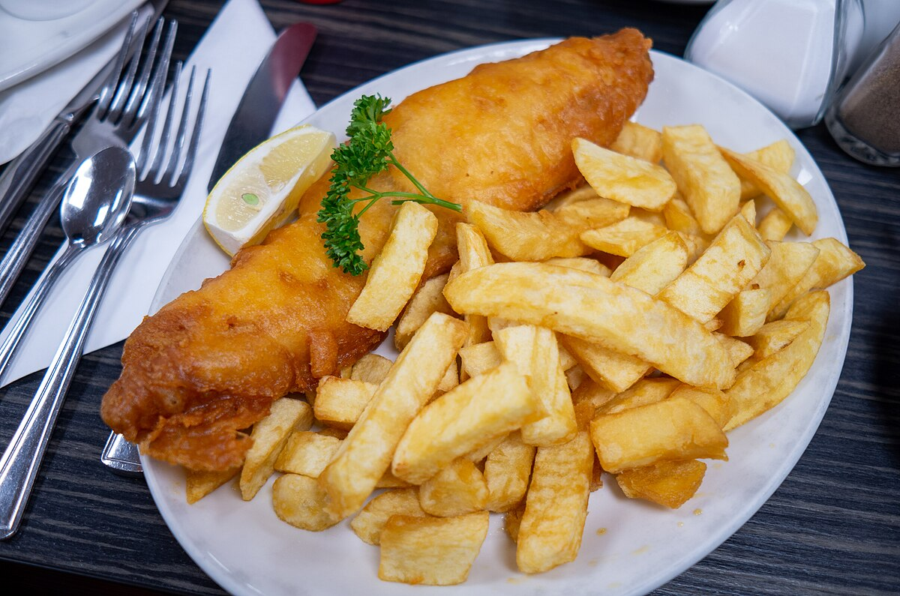

fish and chip
Fish and chips is the popular and delicious dish because the satisfying combination of
crispy batter and flaky fish, the contrast of textures, and the enhanced flavors from frying.

For the Fish:
- 7 tablespoons (55 grams) all-purpose flour, divided
- 7 tablespoons (55 grams) cornstarch
- 1 teaspoon baking powder
- Fine salt, to taste
- Freshly ground black pepper, to taste
- 1/3 cup cold dark beer
- 1/3 cup cold sparkling water
- 4 (7-ounce) thick, white fish fillets
For the Chips:
- 2 pounds potatoes, peeled
- Vegetable oil, as needed for frying
How to do?:
1.Gather the ingredients.
2.Set aside 2 tablespoons of all-purpose flour.
In a large, roomy bowl, mix the remaining 5 tablespoons all-purpose flour with 7 tablespoons cornstarch and 1 teaspoon baking powder.
Season lightly with a tiny pinch of fine salt and freshly ground black pepper.
3.Using a fork to whisk continuously, add 1/3 cup cold dark beer and 1/3 cup cold sparkling water to the flour mixture and continue mixing until you have a thick, smooth batter. Place the batter in the fridge to rest for 30 minutes to 1 hour.
4.Meanwhile, cut 2-pounds peeled potatoes into a little less than 1/2-inch-thick slices, then slice these into 1/2-inch-wide sticks. Place the chips into a colander and rinse under cold water.
5.Place the washed chips into a saucepan of enough cold water to cover them by about 1 inch. Bring to a gentle boil over high heat, then simmer on low heat for 3 to 4 minutes.
6.Drain, transfer to a paper-towel-lined-plate, then pat dry with paper towels. Keep in the fridge covered with paper towels until needed.
7.Meanwhile, lay 4 (7-ounce) thick, white fish fillets on a paper towel and pat them dry. Season lightly with a little salt.
8.Heat about 3 inches of vegetable oil to 350 F in a deep-fryer or large, deep saucepan. Par-cook the chips a few handfuls at a time in the oil, about 2 minutes (do not brown them). Remove the chips from the oil and drain on paper towels. Set aside.
9.Heat about 3 inches of vegetable oil to 350 F in a deep-fryer or large, deep saucepan. Par-cook the chips a few handfuls at a time in the oil, about 2 minutes (do not brown them). Remove the chips from the oil and drain on paper towels. Set aside.
10.dip into the batter, coating the entire fillet.
11.Position a rack in the center of the oven and heat to 200 F. Line a rimmed baking sheet with paper towels and set aside. Bring the oil temperature back to 350 F. Carefully lower each fillet into the hot oil. Fry until the batter is crisp and golden, turning the fillets occasionally with a large slotted spoon, 6 to 8 minutes.
12.Remove the fillets from the oil to the paper-towel-lined baking sheet. Sprinkle lightly with salt, and transfer to the oven to keep warm.
13.Heat the oil to 400 F, then cook the chips in batches until golden and crisp, about 5 minutes. Remove from the oil and drain. Season with salt.
14.Serve immediately, accompanied by your favorite condiment and a cold pint.